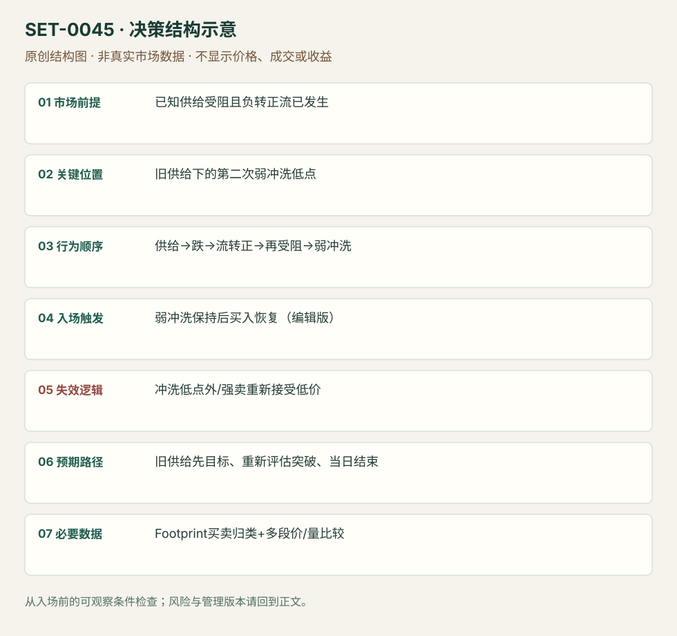

冰山受阻、流转向与弱冲洗后的再拍卖
Iceberg Reauction after Weak Flush · SET-0045 · reviewed · v1.0.0
盈利证据：not_established。审查范围与来源版本见第13节；未知字段保留缺失原因。
1. 名称与快速概览
已有强买受阻的上方供给，跌后出现主动流转向；回测该供给仍未解决，随后一轮快速但弱卖出的冲洗失败，再做多攻击旧供给。多段序列都须成立。
记录口径：PA non_primary；必要数据 footprint、classified_trades、OHLC。名称性质：编辑性描述名，英文保留来源术语以便检索。reviewed 只表示本条规则与证据记录审查通过，盈利状态为 not_established。
2. 本质与行为假说
旧供给可能是冰山，但普通Footprint大成交并不能单独证明隐藏订单；本库将其写为“疑似冰山/持续供给”。弱下冲不是强新卖出，是可观察比较，而非确定清仓身份。
3. 适用市场与环境
源例ES 2022-06-30。适合上方已知供给与明确负转正Delta、多段回测；首跌尚未结束或强卖持续压低则不接。
来源实用市场：S&P500期货。
Session：源图ES日内11:51–12:44附近，时区未注明；只计本执行session机会，结束前平仓。
跨市场：本版不主张已经验证的跨市场迁移；更换市场必须重定数据来源、流动性与session。
4. 出现前的观察清单
记录原受阻价、当时主动量和实际价格响应；比较前跌与后冲洗的量/价、聚合规则和Delta定义，保留局部风险低点。
5. 形成过程与状态转换
强买受阻 → 深跌 → 强负Delta转更强正 → 回旧供给仍受阻 → 快下冲但卖量轻 → 恢复买入 → 再拍卖旧供给。
6. Entry trigger 与执行方式
原文在后段弱冲洗后干量/恢复处买。编辑可复盘版等该弱冲洗低点被守且重新向上恢复，避免只有快跌就认定清仓。此入口不是第一次吸收处逆向。
7. Invalidation 与止损逻辑
该次弱冲洗低点外；若大卖出持续并接受更低价格，则弱冲洗假说失效。来源未给统一价格止损，本库结构保护为编辑模块。
8. Exit、target 与 trade management
旧供给为第一目标，是否继续越过须再看接受/主动性；无法解决便减仓。不能因标签poor high而保证穿过，当前session末平仓。
9. 常见 variations
上方供给换成其他被动区需另研究；低量Open Drive回测是0041版本，并非本条全部序列。
10. 失败方式与不交易条件
冰山身份未经证明；强负转正只有单棒噪声；第二次冲洗其实强主动卖出；原供给始终无法越过；只看颜色遗漏价格响应。
11. 与相近 setups 的区别
12. 图表与案例解读
已看完整Footprint序列，日期可读。图能核相对量和阶段，不能证明隐藏订单真实身份；错误清仓标签不被静默当事实。
- [VIS-000048] EMINI S&P500 Iceberg Trading With Footprint: absorbtion-selling-absobption-bid-liquidation-breakout of the iceberg.；定位：EMINI S&P500 Iceberg Footprint。原图标2022-06-30，四个区域展示受阻、卖出、买方恢复与后冲洗；short liquidation标签与正文冲突。 验证：chart_viewed。

本地原创示意（VIS-000102，非真实市场数据）：

小屏阅读可打开原尺寸示意图并缩放。

此图用于对照识别顺序与风险定义；不计入真实案例覆盖率。
视觉材料元数据与查看范围
- VIS-000048 · real_source_chart / structure_and_trigger / chart_viewed
品种：S&P500期货；日期：2022-06-30；周期：未知/不适用；时区：未知/不适用
周期未在图中核对；时区未在图中核对；来源图表不是成交审计 - VIS-000102 · synthetic_structure_diagram / illustration_only / generated_not_market_evidence
品种：未知/不适用；日期：未知/不适用；周期：未知/不适用；时区：未知/不适用
无真实品种、日期或价格：这是结构示意
13. 证据、分歧与未知项
完整序列主要Axia；Bookmap是独立概念背景，核心佐证有限。原图把被困买方后的冲洗写成short liquidation，正文写longs，这一术语冲突保留；本条按实际弱下冲描述，不推测账户。
- [EVD-000090] Axia Futures，《How Can Footprint Help Your Trade Execution》，SRC-0063；定位：Using Footprint To Trade Around Iceberg: June30 2022。支持：先强买撞供给，跌后Delta由强负转更强正；回原供给再受阻，快速下冲却无大卖出时买，准备再拍卖旧天花板。
- [EVD-000091] Bookmap editorial team，《How to Spot Long Liquidations Before They Break》，SRC-0069；定位：Wait for rebuild after flush / delta flip。支持：独立工具商讨论冲洗后等待真实恢复；其ES案例以假设引入，不是此冰山序列的真实佐证。
审查边界：来源份数与独立核心核验分开；当前类别为 independent_context_only。正文中的概念、官方事实、衍生解说或同族资料只按其支持范围使用。
- [EVD-000105] 编辑操作化，未测试：弱冲洗保持后用局部恢复买入、冲洗低点外风险；完整机械时限与buffer待测。 原文边界：原文给冰山、Delta翻转和弱冲洗叙事，未给统一数值下单参数。
14. 可用于复盘的检查表
- ☐ 下单前的前提可核对：已知供给受阻且负转正流已发生
- ☐ 事前标记位置：旧供给下的第二次弱冲洗低点
- ☐ 行为按顺序出现：供给→跌→流转正→再受阻→弱冲洗
- ☐ 实际触发符合选定版本：弱冲洗保持后买入恢复（编辑版）
- ☐ 事先写明本次否定条件：冲洗低点外/强卖重新接受低价
- ☐ 目标/路径只用当时已知信息：旧供给先目标、重新评估突破、当日结束
- ☐ 数据满足 Footprint买卖归类+多段价/量比较；记录时间、点差、滑点、队列和未成交
- ☐ 记录截止平仓及规则偏离；正常亏损不事后改成“未成立”
15. 后续验证问题
供应商能否直接验证冰山而非大成交？弱冲洗按什么归一化比较？去掉Delta转向前提后的效果？
双向相关导航
- SET-0040 单向伸展末端的主动流耗尽反向短打 0045 必须先有冰山、卖压转换和弱冲洗的多段序列，本条只需末端耗尽短打。
- SET-0003 关键位置吸收后的反转 0003 局部吸收即可反向，本条须整个先供给、深跌、流转向、再受阻、弱冲洗序列。